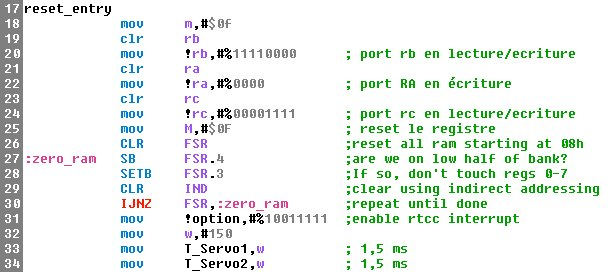
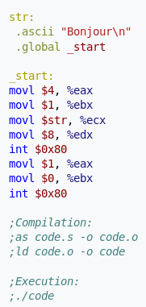
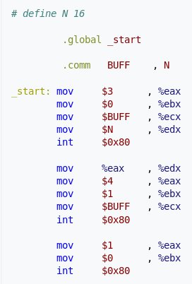
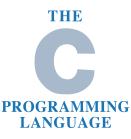
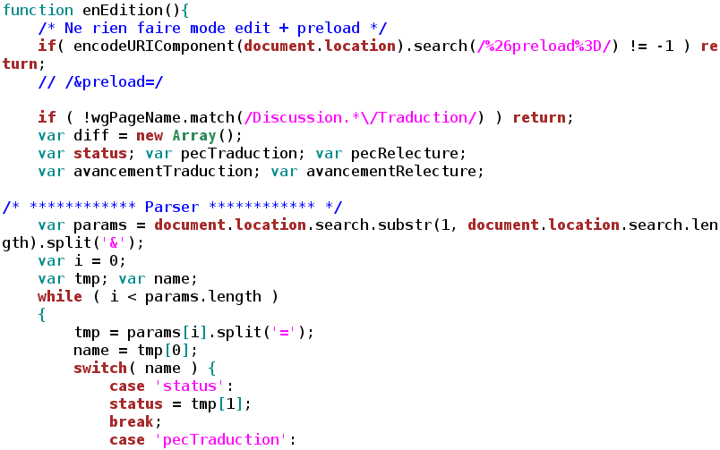
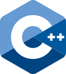
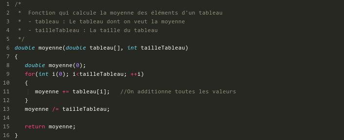
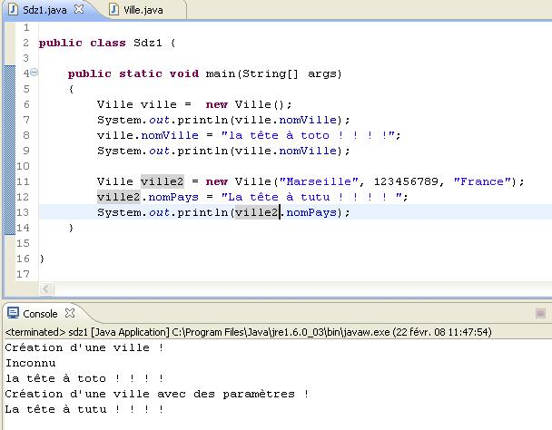
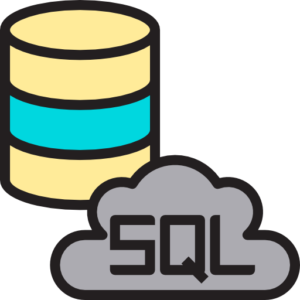

Un langage d'assemblage ou langage assembleur est, en programmation informatique, le langage de plus bas niveau qui représente le langage machine sous une forme lisible par un humain. Les combinaisons de bits du langage machine sont représentées par des symboles dits « mnémoniques » (du grec mnêmonikos, relatif à la mémoire), c'est-à-dire faciles à retenir. Le programme assembleur convertit ces mnémoniques en langage machine, ainsi que les valeurs (écrites en décimal) en binaire et les libellés d'emplacements en adresses, en vue de créer par exemple un fichier objet ou un fichier exécutable. De plus, ce langage fait parti des plus anciens : en effet le premier code en assembleur date de 1954.



Les programmes ci-dessus sont quelques exemple des posibilitées de l'assembleur
Langage C

C est un langage de programmation impératif généraliste, de bas niveau. Inventé au début des années 1970 pour réécrire UNIX, C est devenu un des langages les plus utilisés, encore de nos jours. De nombreux langages plus modernes comme C++, C#, Java et PHP ou Javascript ont repris une syntaxe similaire au C et reprennent en partie sa logique. C offre au développeur une marge de contrôle importante sur la machine (notamment sur la gestion de la mémoire) et est de ce fait utilisé pour réaliser les « fondations » (compilateurs, interpréteurs…) de ces langages plus modernes.
Ci-dessous, voici quelques programmes écrit en langage C

Langage C++

C++ est un langage de programmation compilé permettant la programmation sous de multiples paradigmes (comme la programmation procédurale, orientée objet ou générique). Ses bonnes performances, et sa compatibilité avec le C en font un des langages de programmation les plus utilisés dans les applications où la performance est critique.
Créé initialement par Bjarne Stroustrup dans les années 1980, le langage C++ est aujourd'hui normalisé par l'ISO. Sa première normalisation date de 1998 (ISO/CEI 14882:1998), ensuite amendée par l'erratum technique de 2003 (ISO/CEI 14882:2003). Une importante mise à jour a été ratifiée et publiée par l'ISO en septembre 2011 sous le nom de ISO/IEC 14882:2011, ou C++112. Depuis, des mises à jour sont publiées régulièrement : en 2014 (ISO/CEI 14882:2014, ou C++143) puis en 2017 (ISO/CEI 14882:2017, ou C++174).

Java
Java est un langage de programmation orienté objet créé par James Gosling et Patrick Naughton, employés de Sun Microsystems, avec le soutien de Bill Joy (cofondateur de Sun Microsystems en 1982), présenté officiellement le 23 mai 1995 au SunWorld.
La société Sun a été ensuite rachetée en 2009 par la société Oracle qui détient et maintient désormais Java.
Une particularité de Java est que les logiciels écrits dans ce langage sont compilés vers une représentation binaire intermédiaire qui peut être exécutée dans une machine virtuelle Java (JVM) en faisant abstraction du système d'exploitation.

Sur le programme situé à gauche, nous pouvons voir les possibilitées du langage Java
HTML
L’HyperText Markup Language, généralement abrégé HTML, est le langage de balisage conçu pour représenter les pages web. C’est un langage permettant d’écrire de l’hypertexte, d’où son nom. HTML permet également de structurer sémantiquement et logiquement et de mettre en forme le contenu des pages, d’inclure des ressources multimédias dont des images, des formulaires de saisie et des programmes informatiques. Il permet de créer des documents interopérables avec des équipements très variés de manière conforme aux exigences de l’accessibilité du web. Il est souvent utilisé conjointement avec le langage de programmation JavaScript et des feuilles de style en cascade (CSS). HTML est inspiré du Standard Generalized Markup Language (SGML). Il s'agit d'un format ouvert.
CSS
Les feuilles de style en cascade, généralement appelées CSS de l'anglais Cascading Style Sheets, forment un langage informatique qui décrit la présentation des documents HTML et XML. Les standards définissant CSS sont publiés par le World Wide Web Consortium (W3C). Introduit au milieu des années 1990, CSS devient couramment utilisé dans la conception de sites web et bien pris en charge par les navigateurs web dans les années 2000.
PHP
PHP: Hypertext Preprocessor5, plus connu sous son sigle PHP (sigle auto-référentiel), est un langage de programmation libre6, principalement utilisé pour produire des pages Web dynamiques via un serveur HTTP5, mais pouvant également fonctionner comme n'importe quel langage interprété de façon locale. PHP est un langage impératif orienté objet.
PHP a permis de créer un grand nombre de sites web célèbres, comme Facebook, Wikipédia, etc.7 Il est considéré comme une des bases de la création de sites web dits dynamiques mais également des applications web.
SQL

SQL (sigle de Structured Query Language, en français langage de requête structurée) est un langage informatique normalisé servant à exploiter des bases de données relationnelles. La partie langage de manipulation des données de SQL permet de rechercher, d'ajouter, de modifier ou de supprimer des données dans les bases de données relationnelles.
Outre le langage de manipulation des données, la partie langage de définition des données permet de créer et de modifier l'organisation des données dans la base de données, la partie langage de contrôle de transaction permet de commencer et de terminer des transactions, et la partie langage de contrôle des données permet d'autoriser ou d'interdire l'accès à certaines données à certaines personnes.
Créé en 1974, normalisé depuis 1986, le langage est reconnu par la grande majorité des systèmes de gestion de bases de données relationnelles (abrégé SGBDR) du marché.
SQL fait partie de la même famille que les langages SEQUEL (dont il est le descendant), QUEL (intégré à Ingres) ou QBE (Zloof).